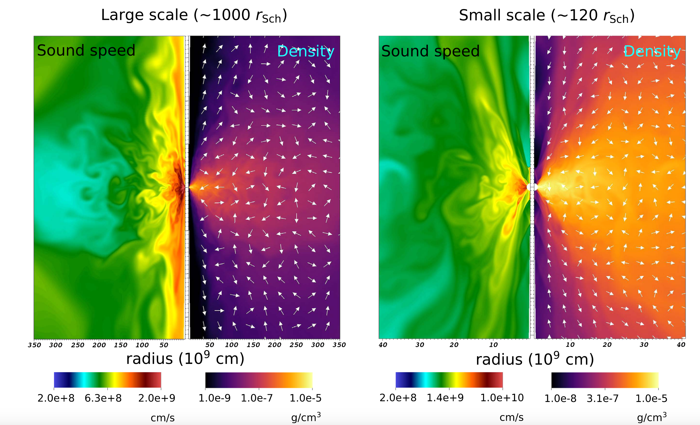

Research Interests
SuperMassive Black Holes (SMBHs), BH accretion, Active Galactic Nuclei (AGN) feedback, co-evolution of SMBHs and host galaxies, quasars, high redshift galaxies, AGN outflow/wind/jet, numerical simulations (HD/RHD/RMHD)
Selected Publications
- Hu, H. et al. The Convergence of Heavy and Light Seeds to Overmassive Black Holes at Cosmic Dawn. Astrophys. J. Lett. 983, L37 (2025).
- Hu, H. et al. Supercritical Growth Pathway to Overmassive Black Holes at Cosmic Dawn: Coevolution with Massive Quasar Hosts. Astrophys. J. 935, 140 (2022).
- Hu, H., Inayoshi, K., Haiman, Z., Quataert, E. & Kuiper, R. Long-term Evolution of Supercritical Black Hole Accretion with Outflows: A Subgrid Feedback Model for Cosmological Simulations. Astrophys. J. 934, 132 (2022).
- Hu, H. et al. Signature of Supersonic Turbulence in Galaxy Clusters Revealed by AGN-driven Halpha Filaments. Astrophys. J. Lett. 929, L30 (2022).
- Qiu, Y. Hu, H. et al. Dynamics and Morphology of Cold Gas in Fast, Radiatively Cooling Outflows: Constraining AGN Energetics with Horseshoes. Astrophys. J. Lett. 917, L7 (2021).
Research Highlights
High-z Quasars and the Formation of SMBHs
Observations on high-z Quasars indicate the existence of 109-1010 Solar Mass SMBHs at z ≈ 6-7. It is challenging to grow such SMBHs by the 'Eddington accretion rate' due to balance between radiation and gravity, even at 100% duty cycle. Two alternatives are proposed to explain the formation and evolution of these SMBHs: "Heavy Seed BHs" and "Rapid growth (super-Eddington growth) of seed BHs" . I am applying simulations and analytical models to explain their existences.
Co-evolution between seed BHs and host galaxies in MM diagram
Based on simulation results regarding super-Eddington accretion onto seed BHs, we propose a subgrid feeding (and feedback) model for seed BHs at galactic centers. Such a subgrid model can facilitate the rapid growth of seed BHs at high-z universe, when the outflow strength is moderate (p ~ 0.5-0.7). We apply the feeding model to heavy seeds and light seeds at z=20. We find that despite their vast difference upon their seeding, seed BHs go through super-Eddington accretion when gas supply is sufficient. The rapid growth results in a high BH-mass-to-galaxy-mass ratio, consistent with recent JWST SMBHs at high redshift.
Redshift evolution of MM ratio for two seeding scenarios
However, the rapid growth of seed BHs also erase their seeding information, making it hard to distinguish the formation channels for different seeds. This figure showcase the convergent evolution of BH-mass-to-galaxy-mass ratios for heavy and light seed BHs. Even so, it is still possible to disentangle the degeneracy before they converge. It indicates that high ratio SMBHs found at z~10 are probably originated from heavy seeds (DCBHs), as the convergence occurs after z~9-8.
AGN Feedback in galaxy Cluster (Perseus Cluster)

AGN feedback is thought to be responsible for the co-evolution between SMBHs and host galaxies. Yet, it is difficult to diagnostic energetics of AGN feedback. The outflow, originating from SMBH accretion, carries the energetic information of AGN activities. To this concern, we build an analytical model to investigate the formation and evolution of AGN-driven outflows. We apply this model to account for the formation and evolution of cold gas filaments in Perseus cluster, deciphering the AGN energetics. We find that the 1/2 slope of velocity structure function (VSF) for Halpha-traced cold gas filaments in Perseus can be well explained by the cold components of a supersonic hot outflow driven by AGN activities when it cools down radiatively after about 10-20 Myr. We reproduced varied morphologies of cold gas similar to the observed ones in Perseus (i.e., radial filaments, horseshoe filament, blueloop like structures) in simulations. The origin of these cold filaments also indicates the energetics of the AGN activities. The subsequent evolution of cold gas may also indicate the positive AGN feedback in a 10-20 Myr time delay.
Super-Eddington accretion onto BHs
Super-Eddington accretion onto BHs is believed to be responsible for the rapid growth of seed BHs at high redshfit and for some ultra-luminous X-ray binaries. It is believed that when sufficient dense gas is fed to the BH, the radiation will be trapped within the dense disks, resulting in negligible feedback effects to large scale gas supply. The minimum negative feedback effects enable super-Eddington accretion. To this end, we apply 2D RHD simulations to study the long-term evolution of super-Eddington accretion onto BHs considering effective photon-trapping. We realize a quasi-steady super-Eddington accretion. This figure shows the 2D distribution of the sound speed and gas density at two different scales for the fiducial case when the simulation terminates. On the larger scale (left panel), the overall flow pattern is governed by convective motion and shows that the gas is inflowing through the equatorial region and a similar amount of gas is outflowing to the polar regions. On the smaller scale (right panel), the inflows dominate over the outflows owing to strong gravity. The strong outflow results in a decrease of inflow rate towards BH. This behavior is consistent with other radiation inefficient accretion flow (RIAF) simulations.